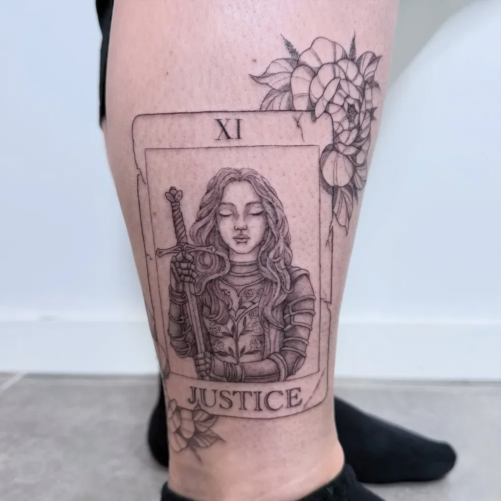
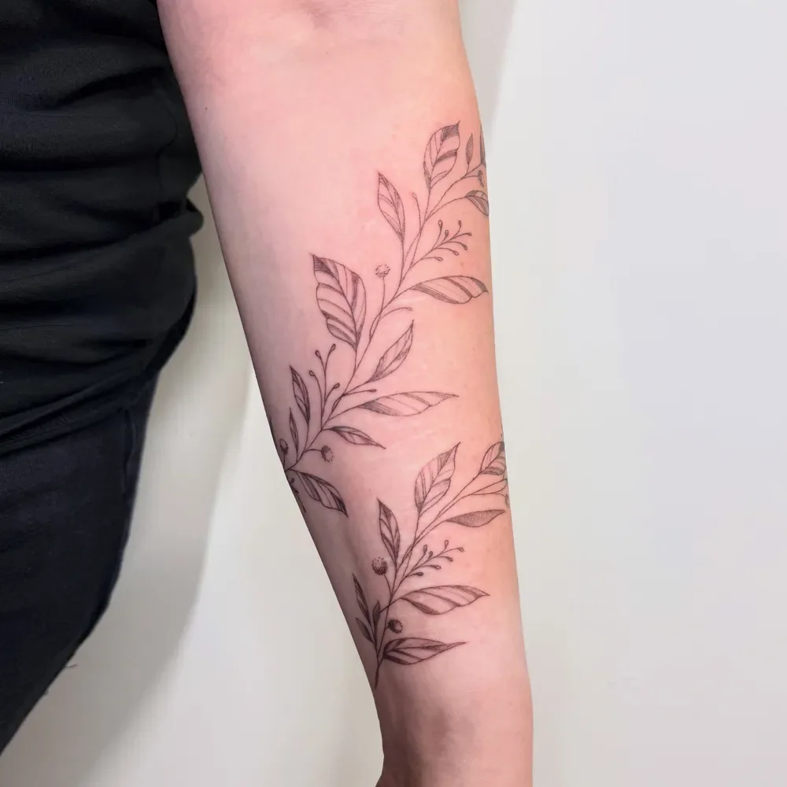
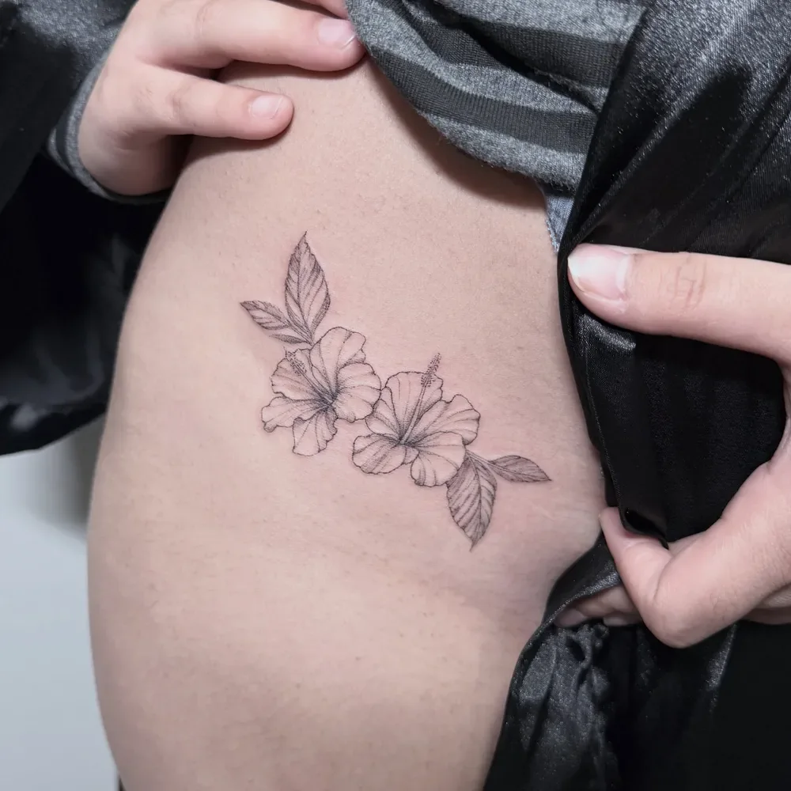
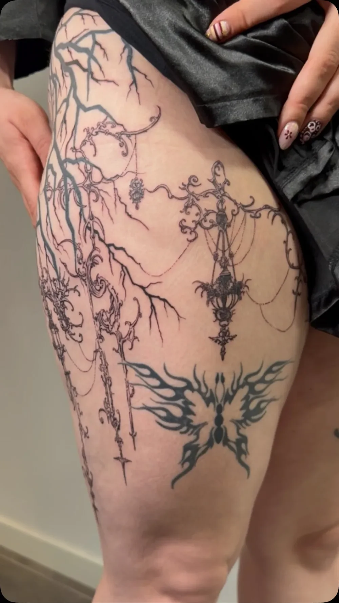
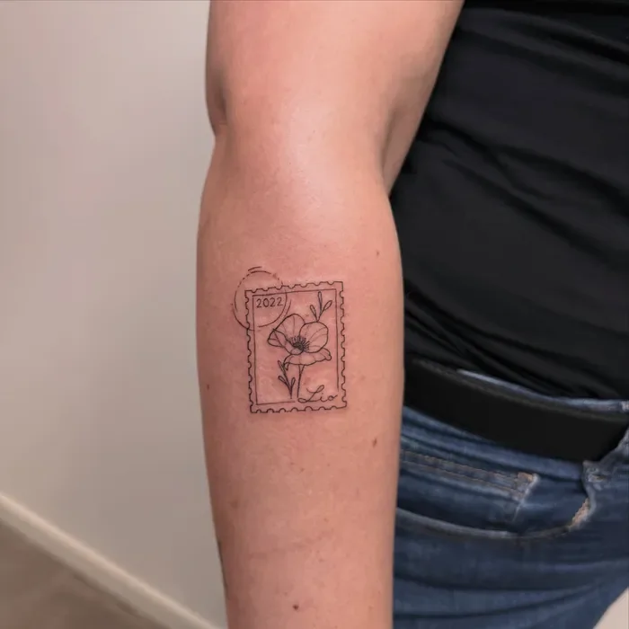
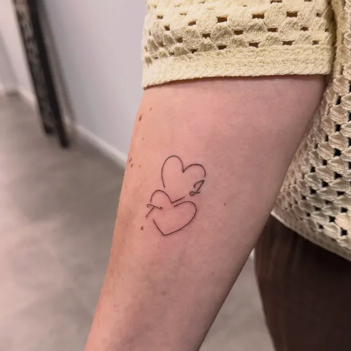
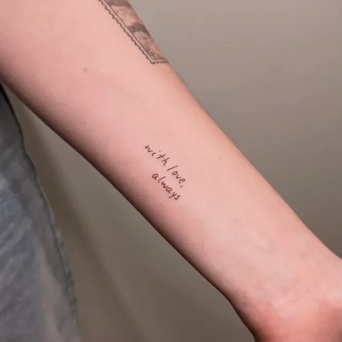
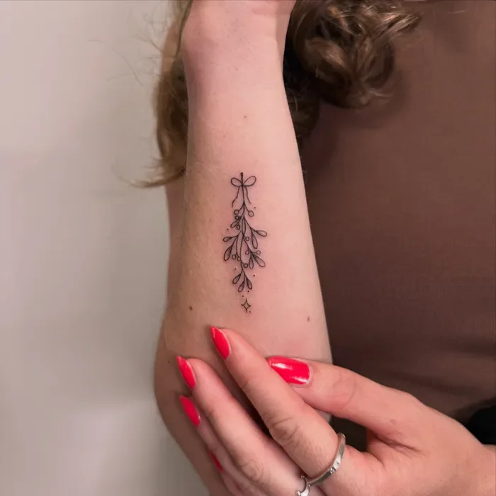
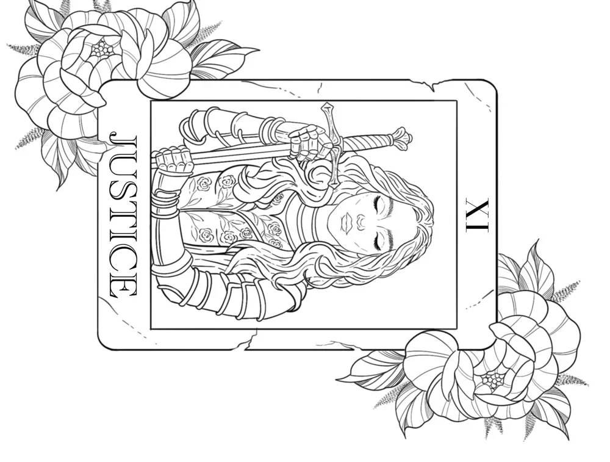
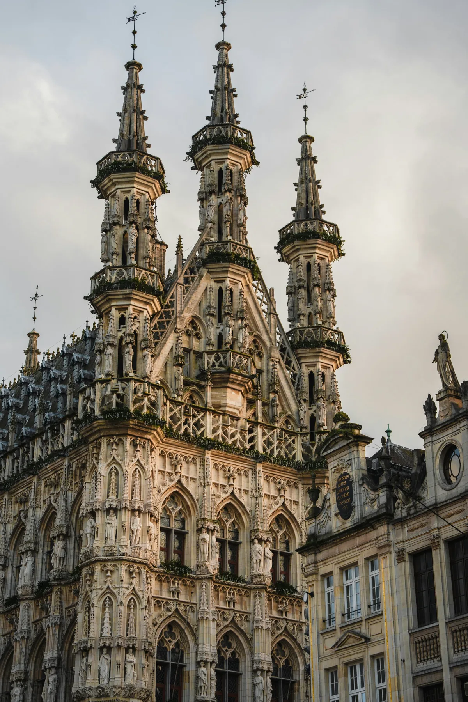

Elk stuk heeft
een reden.
Drie zussen op drie continenten. Een plaat die je nooit meer afzet. Een eerste tattoo die een sleeve werd. Vertel me waarom je hem wil, dan teken ik hem voor jouw huid.


Fine lines at their finest. Simple and delicate, yet powerful.Vanesa op Instagram
Three sisters from Colombia, each living on a different continent, meeting in Belgium.Vanesa op Instagram
She trusted me for her first tattoo and now we are building a floral sleeve.Vanesa op Instagram
Some flowers take you back to summer, to the sea, or bring you back home.Vanesa op Instagram



En heel veel klein werk.
Een sterretje, een woord, een discobal. Die zet ik elke week, alleen schiet posten er vaak bij in.
Yes, I do a lot of them, but not many time to post it.Vanesa op Instagram






Van idee
tot heling.
Zo gaat het bij mij, van je eerste mail tot de dag dat je tattoo helemaal genezen is. Geen verrassingen, wel tijd voor je vragen.

-
01Vandaag
Je mail
Vertel me wat je wil, waar het komt en ongeveer hoe groot. Zet erbij wanneer je kan en stuur een paar voorbeeldfoto's mee. Meer heb ik niet nodig om te beginnen.
-
02Per maand
Een plek in de agenda
Mijn boekingen gaan per maand open. Staat de volgende maand open, dan zie je dat eerst op Instagram.
-
03Bij het boeken
Het voorschot
Je schrijft een voorschot over, met je naam en de datum van je afspraak erbij. Het gaat af van de eindprijs en blijft zes maanden geldig.
-
04De dag zelf
Samen aan tafel
Het design zie je pas op de afspraak. Dan passen we kleine dingen aan en zoeken we de juiste plaats. Wordt het groter dan je vroeg, dan gaat de prijs mee.
- EtenEet goed op voorhand. Lange sessie? Neem snacks mee, de keuken mag je gebruiken.
- KlerenMakkelijke, zwarte kleren. Zit je kledij in de weg, dan ligt er een kimono klaar.
-
05Dag 1 tot 21
De eerste weken
Een verse tattoo is een kleine wonde. Hoe je er de eerste weken mee omgaat, zie je later in je lijnen.
- Na 2 uurDe folie mag eraf. Een beetje bloed en inkt is normaal. Niet opnieuw inpakken.
- WassenMet water en zeep zonder parfum. Deppen met keukenpapier, niet wrijven.
- 2 wekenEen heel dun laagje tattoocrème. Daarna mag je gewone crème weer.
- 3 wekenGeen bad, zwembad, sauna, zonnebank of zon. Douchen mag.
-
06Tot 6 maanden
Een touch-up
Valt er toch een lijntje weg, dan werk ik dat bij binnen de zes maanden. Daarna gaat er altijd SPF 50+ op je tattoo.

Mix & Match.
Elke maand teken ik een nieuw blad vol kleine designs. Je kiest er één, twee of drie uit, in fineline en in zwart. Fijn voor een eerste tattoo, of om samen met een vriendin te komen.
Prijs per persoon · enkel designs van het blad
Voor je boekt.
Ik werk alleen. Deze afspraken houden het eerlijk, voor jou en voor wie na jou komt.
Voorschot, volgens de prijs van je tattoo
Het voorschot gaat af van de eindprijs. Je bent het kwijt als je niet komt, meer dan twintig minuten te laat bent, minder dan 48 uur op voorhand afzegt of meer dan één keer verzet.
Op tijd, niet te vroeg
Hoogstens vijf minuten op voorhand. Is je afspraak om 13u30 en sta je er om 13u, dan wacht je even op straat.
Betalen gaat cash
Leuven heeft niet zoveel automaten. De dichtste vind je in de Parijsstraat 52 en op de Bondgenotenlaan 3.
Vanaf 16 jaar
Eén iemand mag mee in de wachtruimte, niet aan de tafel. Duurt je sessie langer dan een uur, kom dan liefst alleen.
De week ervoor
Smeer je huid in met je gewone crème en scrub zacht met een spons onder de douche. Scheren hoeft niet.
Fineline in zwart
Fineline in kleur zet ik niet. Rode fineline kan wel, maar valt niet onder de touch-up.
Wat de touch-up niet dekt
Vingers, handen en voeten, en schade door krabben, korstjes trekken of een ontsteking.
Ze komen terug.
Voor een tweede, een derde, een vijfde keer. Dat zegt meer dan ik zelf kan.
Ze neemt de tijd om met jou te kijken hoe de tattoo het mooiste zal worden en geeft een oprechte eerlijke mening, al moet ze het 100x opnieuw doen.Linde G. · Google
Vanesa heeft voor mij 3 jaar geleden mijn eerste fineline tattoo gezet, nu 3 jaar later ben ik terug bij haar geweest. Ze heeft een prachtige stijl en ongelofelijk veel geduld.Joke Snyders · Google
Ondertussen al de 5de keer bij Vanessa langs gegaan! De professionele maar persoonlijke aanpak zorgt ervoor dat het een hele ervaring is en niet zomaar een "tattoo" zetten is.Joren Houtevels · Google
Bij Vanessa eerst geweest voor rug tattoo. Heel fijn afgewerkt met fineline en veel details. Nu recent verder laten afwerken naar mijn schouder en borstkas. Heel mooi resultaat en rap genezen.Jitse Vanden Dries · Google
Ze nam uitgebreid haar tijd om samen met mij het design te bespreken zodat het volledig werd wat ik wou. Ook wanneer ik zelf enkele zaken nog niet zo goed wist (bvb grootte van de tattoo) hielp ze mij de juiste keuze maken.Helena Stynen · Google

- Studio
- Brusselsestraat 24, 3000 Leuven
- Uren
- Maandag en woensdag tot zaterdag, vanaf 12u. Enkel op afspraak.
- @vrsartist · @delinkateleuven
Vertel me
je idee.
Je vindt me in de Brusselsestraat, op een paar minuten wandelen van de Grote Markt. Mail me wat je in gedachten hebt, dan kijk ik wat het mooiste wordt op jouw huid.